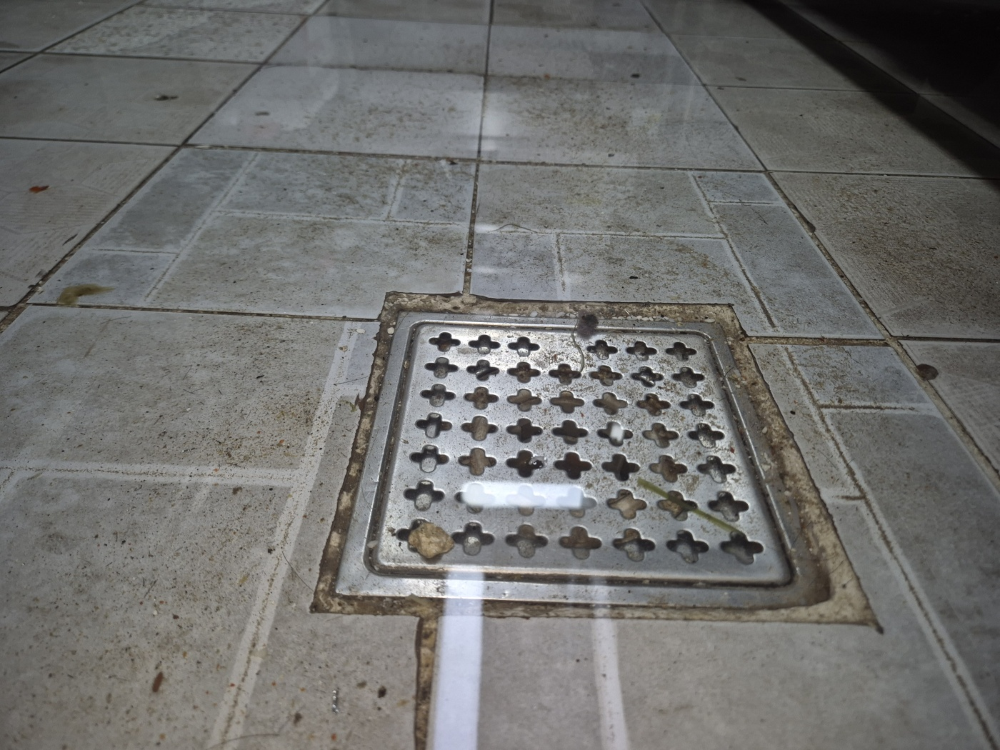
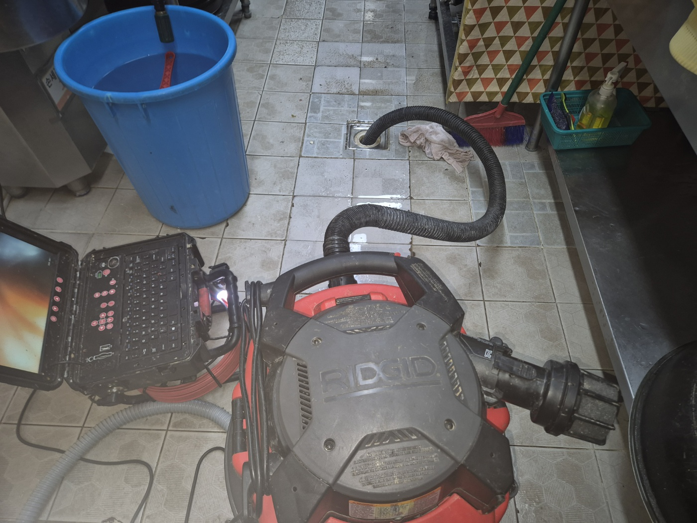
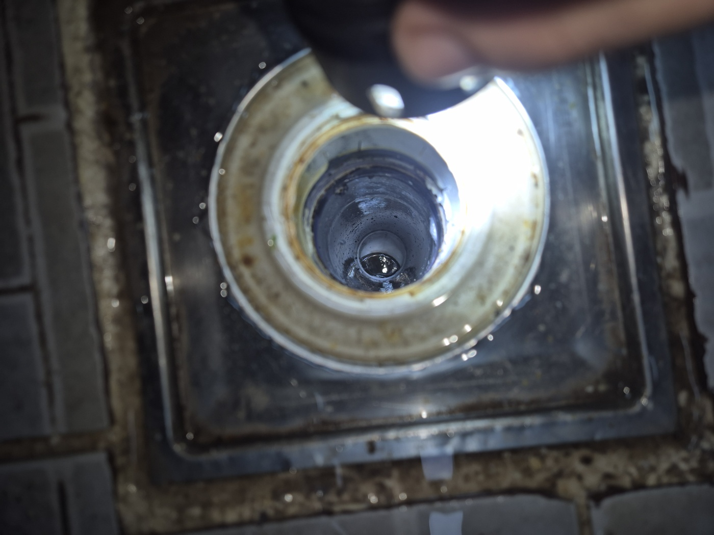
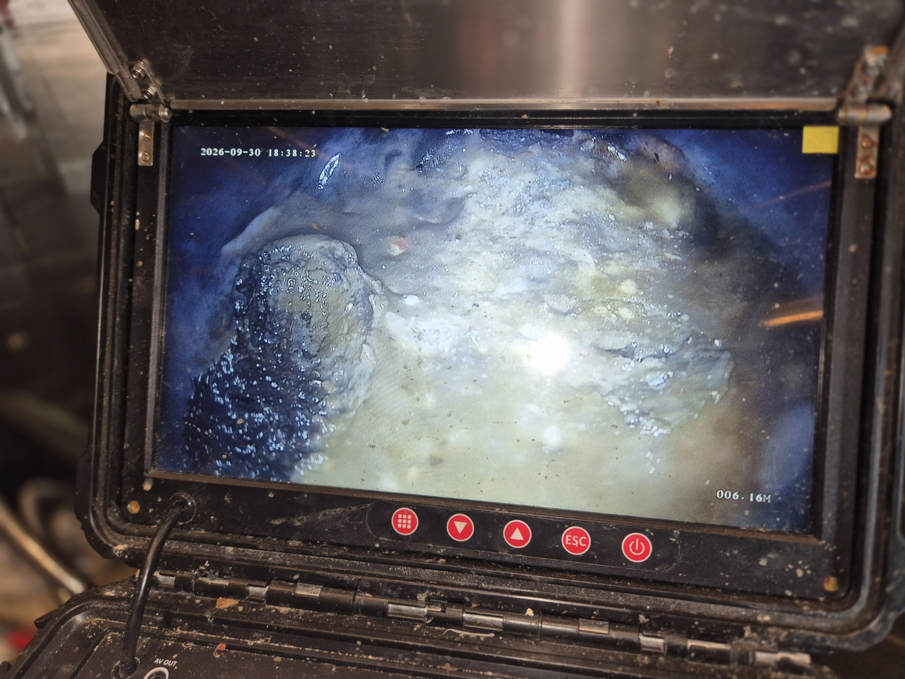
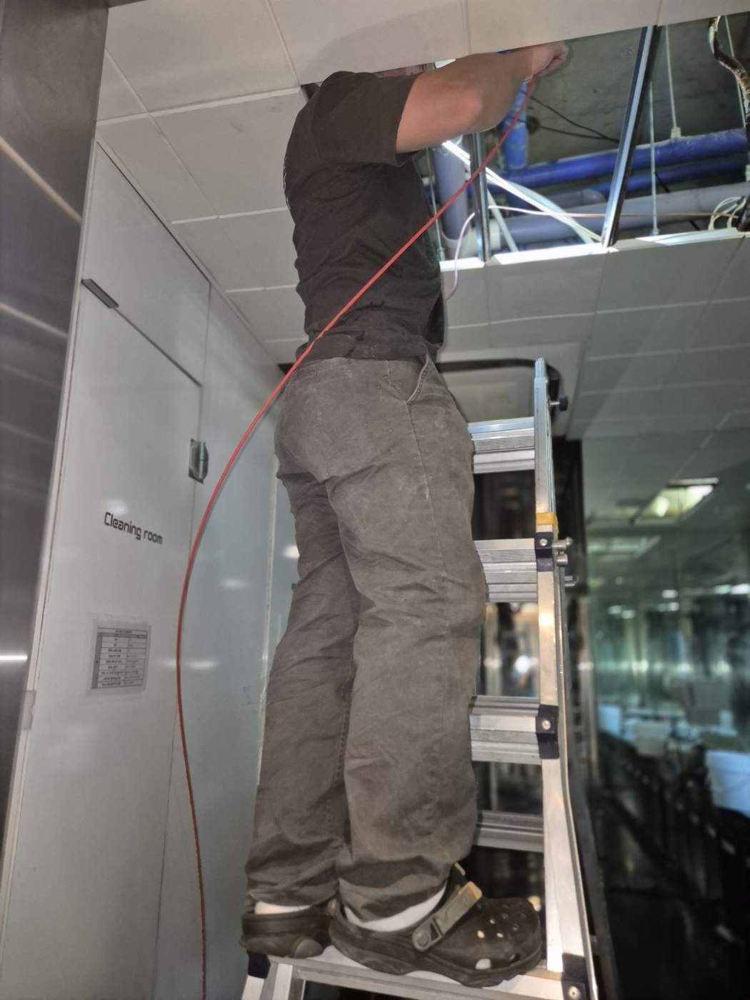
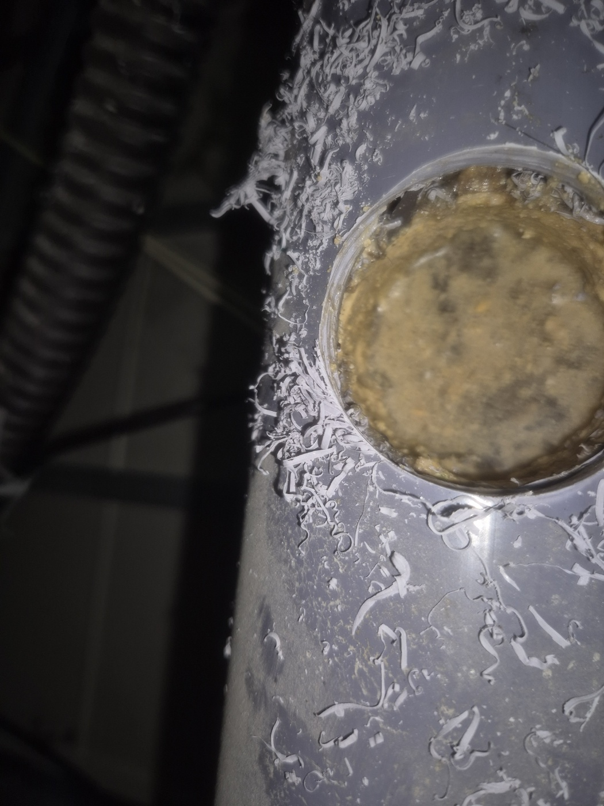
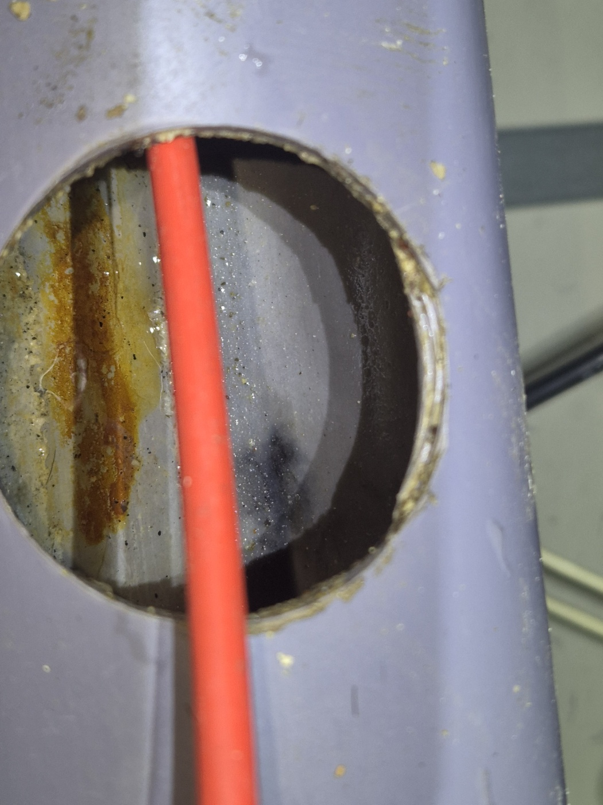

안녕하세요.. 고고고 설비입니다.. 이번에는 천안시 동남구에 있는 5층 건물에서 식당 바닥 하수구가 막혔다는 연락을 받고 출동한 현장을 소개해드릴게요. 4층에 있는 식당 바닥이 막혔고, 배관이 바로 아래 3층 천장 속으로 이어져 있어서 3층 천장 배관까지 함께 작업했습니다.
식당 바닥에 있는 배수구부터 살펴봤어요. 주방에서 나온 물이 모이는 자리라 기름기와 음식물 찌꺼기가 쌓이기 쉬운 곳이더라고요. 덮개를 열고 안쪽을 확인했습니다.

배수구 옆에 배관 청소 장비와 내시경 모니터를 세팅했어요. 한쪽에는 물통도 준비해 두고 작업 준비를 마쳤습니다.

헤드랜턴으로 배수구 안쪽을 비춰서 들여다봤어요. 배수구 가장자리에 때가 두껍게 끼어 있었고, 오래 쌓인 흔적이 한눈에 보였습니다.

그 안쪽으로 내시경을 넣어서 배관 상태를 확인했습니다. 모니터에는 덩어리진 이물질과 찌꺼기가 배관 안에 뭉쳐 있는 모습이 보였어요.

식당 바닥 배관은 바로 아래 3층 천장 속으로 이어져 있었어요. 그래서 3층 천장 점검구를 열고 사다리에 올라가서 배관을 직접 확인했습니다. 천장 속에는 파란색 배관과 하수 배관이 같이 지나가고 있어서 위치를 잘 찾아야 했어요.

하수 배관에 점검용 구멍을 내서 안쪽을 들여다봤어요. 구멍을 열자 배관 안쪽에 오물이 두껍게 눌어붙어 있었고, 배관 겉에는 구멍을 낼 때 생긴 가루가 남아 있었습니다.

구멍 사이로 빨간색 케이블을 밀어 넣으며 배관 안쪽을 작업했어요. 안쪽 벽에는 누런 자국도 남아 있었습니다.

영상으로 보시면 구멍 안쪽에서 물과 찌꺼기가 움직이는 모습이 보여요.
4층 식당 바닥과 3층 천장 배관 모두 원인이 되는 이물질을 제거해서 물이 다시 원활하게 내려가도록 해결해드렸습니다. 식당 바닥 배수구는 음식물 찌꺼기와 기름기가 계속 흘러 들어가서 시간이 지나면 배관에 쌓이기 쉬워요. 물 내려가는 속도가 느려졌다면 완전히 막히기 전에 점검받아 보시는 걸 추천드립니다.
고고고 설비는 주택, 아파트, 원룸, 상가, 공장의 생활 하수 오수 배관을 관리해 주는 업체입니다. 고고고 설비에 전화 주시면 친절상담 정확한 진단 확실한 해결로 보답해 드리겠습니다!!